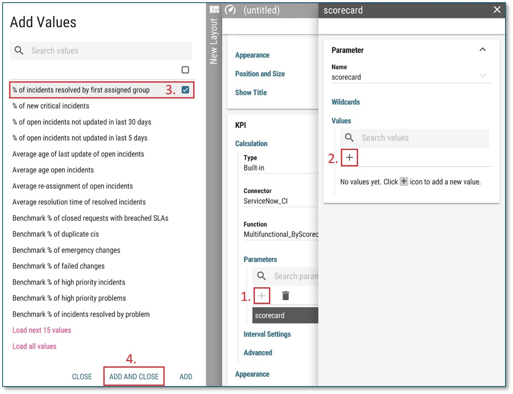

PA - Scorecard¶
This KPI function calculates and returns a value from a scorecard.
The following parameters may be used:
Scorecard – This parameter is a unique identifier of Scorecard. To specify the ServiceNow Scorecard, use the selection menu for the parameter on the KPI Calculation and add the desired scorecard under the Selected values section.
Each KPI function can be associated to only one scorecard.
Figure 1: Scorecard
